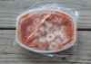

Lean Cuisine

Description
A convenient one-disposable-pot meal. Just like your brother used to make.
Ingredients
- Lean Cuisine of your choice. These can be found in the freezer section of your local grocery store.
- Microwave. These are available from your local home goods retailer. Also, online.
Steps
- Remove Lean Cuisine box from freezer.
- Carefully pull tab on box to open. If there is no tab, carefully lift side flap of box to open, taking special care to avoid papercuts to your hands.
- Gently remove frozen meal from box. Caution! Meal will be cold!
- Gingerly turn over box to view directions on back.
- Follow the directions on the back of the box. You must follow these directions exactly as they appear. Failure to do will void the warranty on your meal. Special note: If the directions require the slicing of film on the entree, you will need to use a knife. If you do not feel comfortable using a knife, ask a trusted adult to help you. If the directions call for stirring at any point, this stirring may be performed in a clockwise or counter-clockwise motion. Choice of -wise will not affect final quality of product.
- When directions for prepartion and heating have been completed, jauntily peel film from tray.
- Consume food.
- Discard both tray and box.